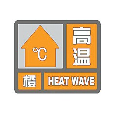
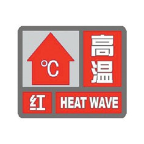

高温预警信号及防御指南
高温预警信号分三级，分别以黄色、橙色、红色表示。
（一）高温黄色预警信号

标准：连续三天日最高气温将在35℃以上。
防御指南：1.有关部门和单位按照职责做好防暑降温准备工作；2.午后尽量减少户外活动；3.对老、弱、病、幼人群提供防暑降温指导；4.高温条件下作业和白天需要长时间进行户外露天作业的人员应当采取必要的防护措施。
（二）高温橙色预警信号

标准：24小时内最高气温将升至37℃以上。
防御指南：1.有关部门和单位按照职责落实防暑降温保障措施；2.尽量避免在高温时段进行户外活动，高温条件下作业的人员应当缩短连续工作时间；3.对老、弱、病、幼人群提供防暑降温指导，并采取必要的防护措施；4.有关部门和单位应当注意防范因用电量过高，以及电线、变压器等电力负载过大而引发的火灾。
（三）高温红色预警信号

标准：24小时内最高气温将升至40℃以上。
防御指南：1.有关部门和单位按照职责采取防暑降温应急措施；2.停止户外露天作业（除特殊行业外）；3.对老、弱、病、幼人群采取保护措施；4.有关部门和单位要特别注意防火。
八、干旱预警信号
干旱预警信号分二级，分别以橙色、红色表示。干旱指标等级划分，以国家标准《气象干旱等级》（GB/T20481-2006）中的综合气象干旱指数为标准。